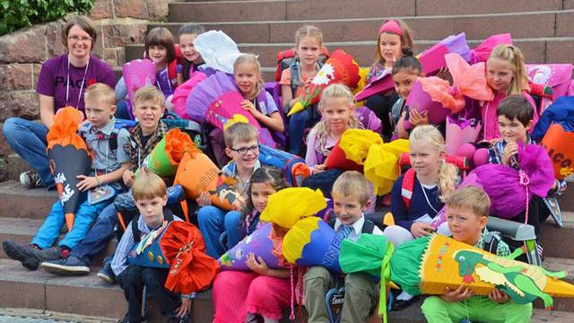
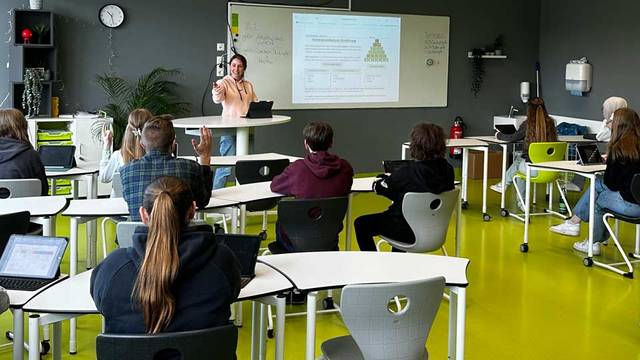

Die Gemeinschaftsschule in Külsheim
Die PAGS-App

PAGS kennenlernen
Für neue Familien: Konzept, Grundschule und Sekundarstufe, Abschlüsse, Fächer, Ganztag, Anmeldung und Ansprechpartner.
Schule kennenlernen
PAGS Alltag
Für jeden Tag: Sekretariat, Krankmeldung, Mensa, Ferien, Kontakte. Eigene Termine, Notizen und Links mit persönlichem Login auf allen Geräten.
Alltag öffnen